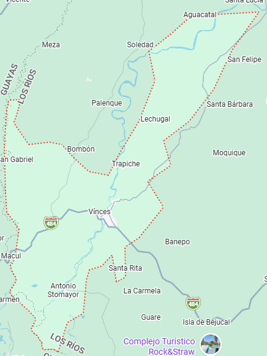

Reseña: Recibió el apodo de "París Chiquito" a finales del siglo XIX debido al gran auge del cacao ("pepa de oro"), época en la que los grandes terratenientes locales viajaban e imitaban las modas de la capital francesa.
Urbanas: Vinces, San Lorenzo.
Rurales: Antonio Sotomayor (Playas de Vinces).
Arroz con menestra y carne asada, ayampaco de río y bollos de pescado en hoja de plátano.
Humedal Abras de Mantequilla: Sitio Ramsar de importancia internacional. Es turístico debido a su inmensa biodiversidad, avistamiento de aves exóticas y ecoturismo comunitario.
Torre Eiffel de Vinces: Réplica del monumento parisino situada en el centro urbano que conmemora la época de oro del cacao.
Hotel El Señor de los Caballos, Hostal París.
Alfonso Montalván Cerezo

80.000 habitantes.
